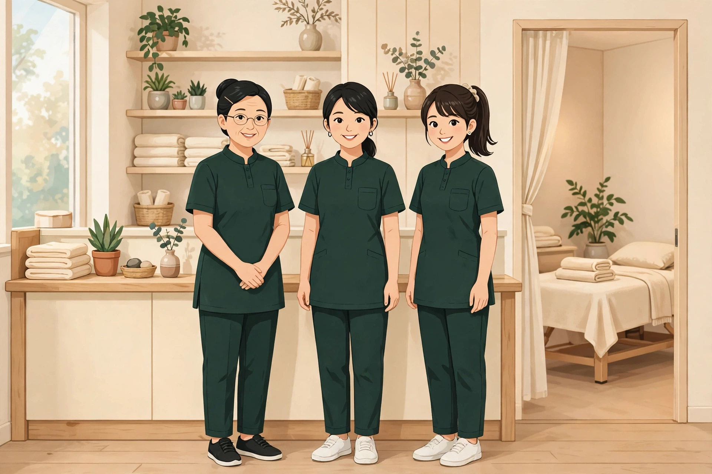
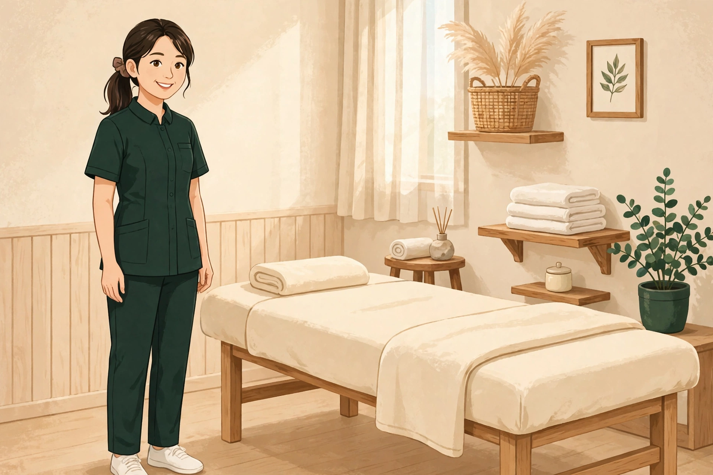

サロン経営シリーズ 第1巻「開業編」
開業の準備と届出から、メニュー・料金の決め方、開業直後の集客までをまとめたシリーズ第1巻です。表紙とKindle版の準備が整い次第、まずこの巻から先行して発売します。
著者：平賀伸人 全201ページ Kindle版 価格は1,650円以内で発売予定
開講準備中｜受講・掲載のお申し込みは開始後にご案内します
施術者・サロン経営者のための教材コラム71本。次回予約、来店後のフォロー、記録の見直しを、現場で使える手順で学べます。

教材を読む
集客コラム全71本を、テーマ別に読み進めます
現場で試す
声かけ・フォロー・予約管理などを、自分のサロンで実践します
記録して見直す
次回予約・再来・継続の記録を見返し、改善点を見つけます
この塾の教材は、集客コラム全71本です。「リピートの仕組み」「口コミ・MEO」「Web・発信」「メニュー・料金」「予約管理」「集客の広げ方」というテーマの並びが、そのままカリキュラムになっています。各教材には、現場で使える手順・声かけや文面の例・チェックポイントを収録しました。気になるテーマから読み進められます。
全71本を表示しています
一人で運営する方も、スタッフと運営する方も、自分の現場に合わせて取り入れられる内容です。

日々の接客の中で使う、次回予約の声かけ、来店後のフォロー、口コミへの対応などを学びます。自分の施術と予約の流れに、そのまま取り入れられます。
リピートの数え方、メニュー・料金の見直し方、口コミや発信の方針など、サロン全体で共有できる集客の考え方を学びます。
現在構築中です。完成後は、集客塾で学んだ実践の場として使える仕組みを目指しています。お客様がサロンを探して予約する送客ポータルと、予約にひもづくカルテ管理を1つに統合する計画で、要点は以下のとおりです。
お客様が症状や条件からサロンを探して予約でき、サロン側は予約を受け付けます。お気に入り・再予約にも対応します。
予約にひもづけて施術の記録をカルテとして残し、スタッフの登録やスタッフ別の実績の確認も扱います。
口コミはサロン側が確認してから掲載の可否を決める形にし、資格確認バッジの表示、求人掲載、セミナーの開催・申込も扱います。
写真を取り込むと姿勢を分析し、ストレッチやトレーニングのアドバイスを表示する機能です。
構築中の送客システムについて、決定している利用料金は以下のとおりです。
月額プランの価格はサービス開始時にご案内します。
この塾につながる新着情報です。著者の書籍シリーズ「サロン経営シリーズ」（Kindle発売準備中）と、キャラクターグッズ・施術の現場で使えるLINEスタンプなどの新商品を紹介します。販売中か、発売準備中・審査中かは各アイテムに表示しています。
新着の本
開業の準備と届出から、メニュー・料金の決め方、開業直後の集客までをまとめたシリーズ第1巻です。表紙とKindle版の準備が整い次第、まずこの巻から先行して発売します。
著者：平賀伸人 全201ページ Kindle版 価格は1,650円以内で発売予定
集客とリピートの作り方に加え、人を雇う「雇用編」、他店舗展開編まで、全12巻が完成しています。各巻200ページを超え、第1巻に続いて順次Kindleで刊行する予定です。このページの教材コラムとあわせて読むと、現場への落とし込みがしやすくなります。
全12巻 各巻200ページ超 Kindle版で順次刊行予定
新商品
姉妹サイトのペットキャラクターや案内役キャラクターなど、11デザインをステッカー・マグカップ・Tシャツにしたグッズです。SUZURIで販売中です。
ステッカー 842円 マグカップ 2,706円 Tシャツ 4,191円
SUZURIで見る →治療院・サロンで使えるストレッチ・運動・ツボの図を収めた「専門家シリーズ ストレッチ編」（24個・370円）と、日常のやり取りに使える「ペット組の毎日スタンプ」（8個・250円）の2セットを審査へ出しました。審査が終わり次第、販売を開始します。
ストレッチ編 24個・370円 ペット組 8個・250円 いずれも審査待ち
「発売準備中」「審査待ち」のアイテムは、開始時期や価格が変わる場合があります。新しい本・商品が出るたびに、このコーナーへ追加していきます。
コラムで学んだ集客を、制作と運用の代行で支援します。受付と決済はココナラで行っています。
サロンのホームページを新規制作します。初めての方が料金・場所・予約方法で迷わない構成にします。
¥50,000
ココナラで見る →LINE公式アカウントの開設から基本プロフィール、あいさつメッセージまでの初期設定を行います。
¥13,000
ココナラで見る →検索で見つけてもらうためのキーワード設計とサイト構成の初期設計を行います。ロングテール集客の出発点です。
¥20,000
ココナラで見る →「お悩み×地域」の組み合わせで検索する方に見つけてもらう、ロングテールページを制作します。
¥50,000
ココナラで見る →ホームページ制作、LINE公式アカウント初期設定、SEO初期設計をまとめたセットです。
¥70,000
ココナラで見る →開業時の集客に必要な制作と設定をまとめた、最上位のセットです。
¥130,000
ココナラで見る →対象はセラピスト・一人サロン全般です。内容の詳細とお申し込みは、各ココナラのサービスページでご確認ください。
受講・掲載のお申し込み受付は開始後にこのページでご案内します。現在は受付を開始していません。